Vietnamese Street Kitchen · Browser-based POS Version 30 · Last updated 11 June 2026
Contents
Table of Contents
1 Introduction & Overview
2 Opening the App & Requirements
3 Accounts, Passwords & Access Rights
Default accounts · Roles · Logging in · Managing staff
4 The Register (Taking Orders)
5 Customising Items & Combos
6 Order Details, Discounts & Held Tickets
7 Payments (Cash, Card & Split)
8 Receipts
9 Promotions
10 Transaction History, Refunds & Voids
11 Dashboard & Reports
12 Menu Manager
13 Settings
14 The Admin Hub
15 Customer Display (Second Screen)
16 Standing Order Tree — Self-Service Kiosk
Attract · Home · Menu · Item sheet · Checkout · Confirmation
17 Loyalty & Membership
18 Data, Storage & Backup
19 Keyboard, Touch & Tips
20 Troubleshooting & FAQ
A Appendix — Quick Reference (Logins & Pricing)
Chapter 1
1 · Introduction & Overview
MCQ Café POS is a complete point-of-sale system for a Vietnamese street-food café. It runs entirely inside a web browser — there is nothing to install and no server logic to maintain.
The system has two faces that share one menu, one set of prices and one sales history:
The Register — the staff-facing till where cashiers ring up orders, take payments, print receipts, process refunds and read reports.
The Standing Order Tree — a self-service kiosk where customers browse the menu, build their order, pay by card and receive a queue number. Kiosk orders flow straight into the same sales history the cashier can look up.
What's included
Area
What it does
Register
11 categories, ~70 items, live search, one-tap add, quantity steppers, per-item customise sheet, guided combos, dine-in / take-away, pager numbers and order notes.
Payments
Split payment across Cash / Card / Other, cash keypad with auto-change, simulated card (EFTPOS) flow, optional cash rounding.
Receipts
Branded, printable receipts with your logo; reprint any past sale.
Promotions
Date-aware discount rules that switch on and off automatically.
History & Refunds
Look up any sale; full or per-item refunds; voids; full audit trail.
Dashboard
Live KPIs, sales by category, payment mix, top sellers, and exports to PDF & Excel.
Menu Manager
Edit prices, enable/disable items, manage add-ons and promotions.
Settings
Store details, logo, tax, staff accounts, and data backup.
Self-Service Kiosk
Customer-facing ordering with EN/VI language, customise sheet, upsell and queue tickets.
In a nutshell
Everything is saved in the browser on the device it runs on. Open the web address, log in with a PIN, and start selling.
Chapter 2
2 · Opening the App & Requirements
Requirements
A modern web browser — Google Chrome or Microsoft Edge is recommended (Safari and Firefox also work).
A device with a screen: a desktop, laptop, or — ideally for the counter and kiosk — a touchscreen tablet.
JavaScript enabled (it is on by default).
Opening it
Open your browser and go to the web address where the system is hosted (for example https://mcqcafeorderingsystem.pythonanywhere.com).
The Login screen appears. Choose your account and enter your PIN (see Chapter 3).
For the best experience, run the browser in full-screen / kiosk mode on the tablet.
Tip — one tablet per role
Run the Register on the staff tablet, and open the Standing Order Tree on a second tablet for customers. Each device keeps its own copy of the data (see Chapter 18).
The screen layout
Once you log in, a slim navigation rail sits on the left and a top bar shows the clock, the signed-in cashier and quick actions (such as Reprint last). The large area in the middle changes depending on what you are doing — selling, reading reports, or editing the menu.
Chapter 3
3 · Accounts, Passwords & Access Rights
The system ships with three staff accounts. Each one logs in with a 4-digit PIN. There are two permission levels: Manager (full access) and Cashier (register only).
Register, history lookup & reprint. Manager PIN required for refunds, voids, discounts and admin areas.
Cashier 2
2222
User
Same as Cashier 1.
Change these PINs before going live
These defaults are public knowledge. In Settings → Staff (Chapter 13) give every real staff member their own account and PIN, and change the Manager PIN.
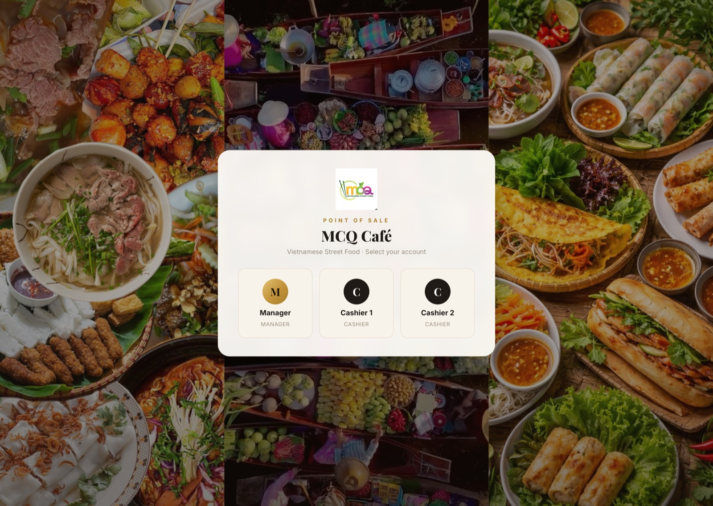
The login screen — choose your account, then enter your 4-digit PIN on the keypad.
Logging in
On the Login screen, tap your account tile.
Enter your 4-digit PIN on the keypad. The screen unlocks automatically once the 4th digit is correct.
To switch user or finish a shift, use Log out from the navigation rail.
Access rights — who can do what
A Cashier can run the register and look up / reprint past sales. The following areas and actions are reserved for a Manager — if a cashier tries to use them, a quick Manager PIN prompt appears. Once entered, manager access stays unlocked for the rest of the shift on that device.
Manager-only area / action
Where
Dashboard & reports
Navigation rail
Transaction History — refunds & voids
History screen
Order & item discounts
Register → % Discount
Menu Manager (prices, items, add-ons, promotions)
Navigation rail
Settings (store, tax, staff, data)
Navigation rail
Audit log
Admin hub
Till "Z" reading (ring off the day)
Dashboard
Training mode
The Manager can switch on Training mode to practise without affecting real sales — training receipts are marked and excluded from takings, reports and stock figures.
Chapter 4
4 · The Register (Taking Orders)
The Register is the heart of the counter. The menu fills the centre; the live order (the "cart") sits on the right.
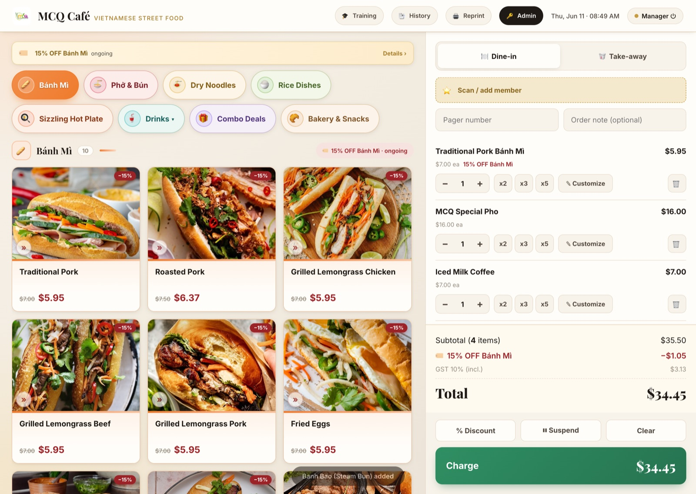
The Register — category chips and a touch-friendly product grid on the left, the live order on the right.
Building an order
Choose a category from the chips along the top (Bánh Mì, Phở & Bún, Rice, Drinks, Combos, Bakery…). The Drinks group reveals sub-categories (Juice, Smoothies, Coffee, Lemonade).
Search any item by name using the search box.
Tap a product card to add it to the order. Tap again to increase the quantity.
In the order list, use the − / + stepper or the quick ×2 / ×3 / ×5 buttons to set quantity, and the 🗑 button to remove a line.
Bánh Mì labelling
Bánh Mì items are automatically tagged "… Bánh Mì" on the order and receipt, so the kitchen never confuses them with the rice or noodle version of the same protein.
The order panel
On the right you'll find the running subtotal, any promotions, tax and the grand total, plus the big Charge button. Above the items you can set the order type, attach a member and add a pager number — covered next.
Chapter 5
5 · Customising Items & Combos
The Customise sheet
Tap ✎ Customize on any order line to open the Customise sheet. It offers three kinds of options:
Paid add-ons — e.g. Pâté (+$1), Egg (+$2), Roast pork (+$5), Extra rice (+$2). Each has its own − / + stepper and is added to the bill.
Free preferences — kitchen instructions at no charge, e.g. No coriander, Cut in half, Less spicy, No ice, Change gloves (vegetarian).
Kitchen note — a free-text note for anything special.
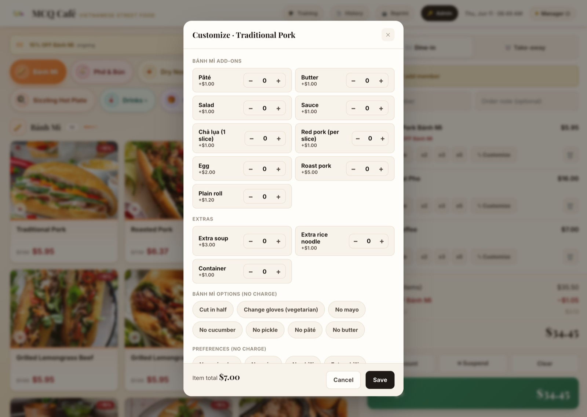
The Customise sheet — paid add-ons with steppers (top), free preferences as chips (below), and a kitchen note.
Combos
Combo deals (e.g. Bánh Mì + Drink) open a guided builder: pick the Bánh Mì, then pick the drink or coffee. The combo has a single fixed price and does not stack with the automatic Bánh Mì promotion.
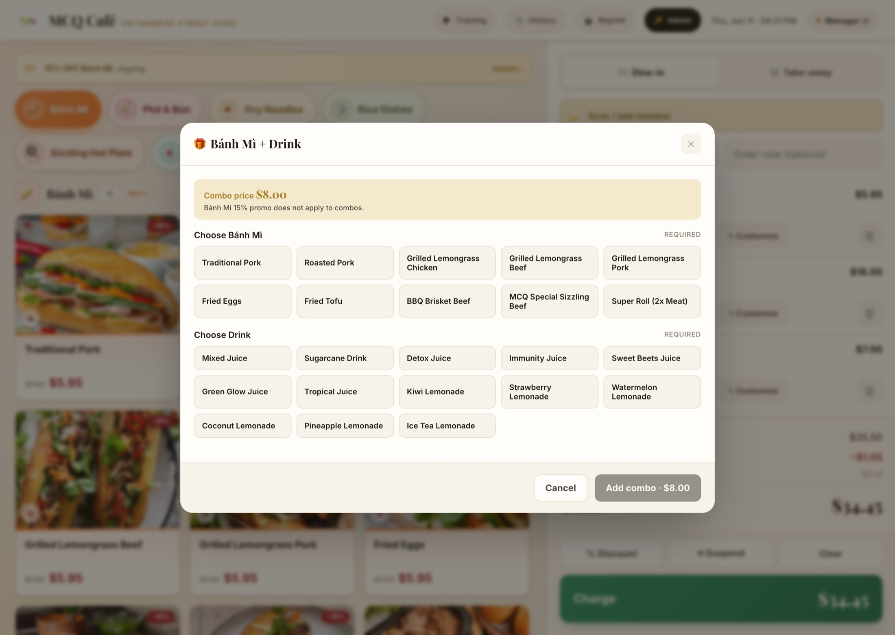
The guided combo builder — choose each part of the combo for one fixed price.
Chapter 6
6 · Order Details, Discounts & Held Tickets
Order details
Dine-in / Take-away — toggle at the top of the order panel.
Pager number and an optional order note can be added for the kitchen / hand-off.
Scan / add member — attach a loyalty member so the sale earns points (Chapter 17).
Discounts Manager
Tap % Discount to apply an order-level or per-item discount as a percentage or a fixed amount — useful for staff meals, comps or goodwill. A discount always requires a Manager PIN, and is applied after any automatic promotion.
Holding a ticket (Suspend)
Tap ⏸ Suspend to park the current order and start a fresh one — handy when a customer steps away. Recall it later from the Suspended button. Clear empties the current order.
Chapter 7
7 · Payments (Cash, Card & Split)
Tap Charge to open the payment screen. You can take one tender or split the total across several.
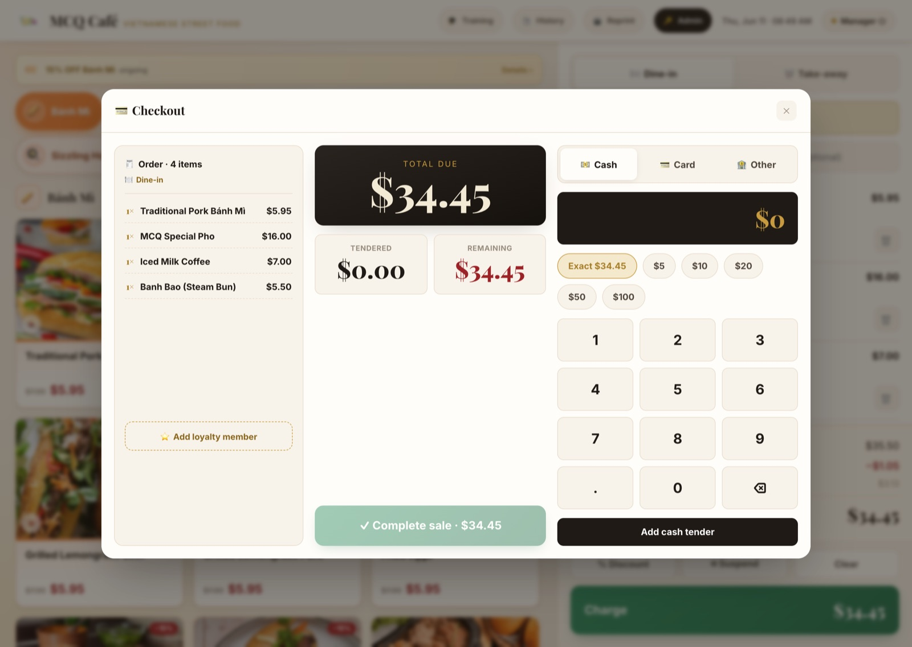
The payment screen — choose Cash, Card or Other; the cash keypad offers quick denominations and auto-change.
Cash
Enter the amount tendered on the keypad, or tap a quick denomination ($10, $20, $50…).
Change due is calculated automatically.
Optional cash rounding (e.g. to the nearest 5¢) can be enabled in Settings; it only applies when the whole sale is paid in cash.
Card
Card runs a simulated EFTPOS terminal flow: the amount is "pushed to the terminal", the screen shows Waiting…, then Approved. (This is a demonstration flow — see the note below.)
Split payment
Add more than one tender — for example part Cash and part Card — until the total is covered. The receipt lists every tender and the change given.
Card payments are simulated
The card flow does not charge a real card. To take real card payments you need a real payment terminal or an online payment provider, which requires a back-end (server). Ask your developer if you want this added.
Chapter 8
8 · Receipts
Every completed sale produces a branded, printable receipt showing your logo, the items (with add-ons, preferences and discounts), tax, the tender(s), change and any refunds.
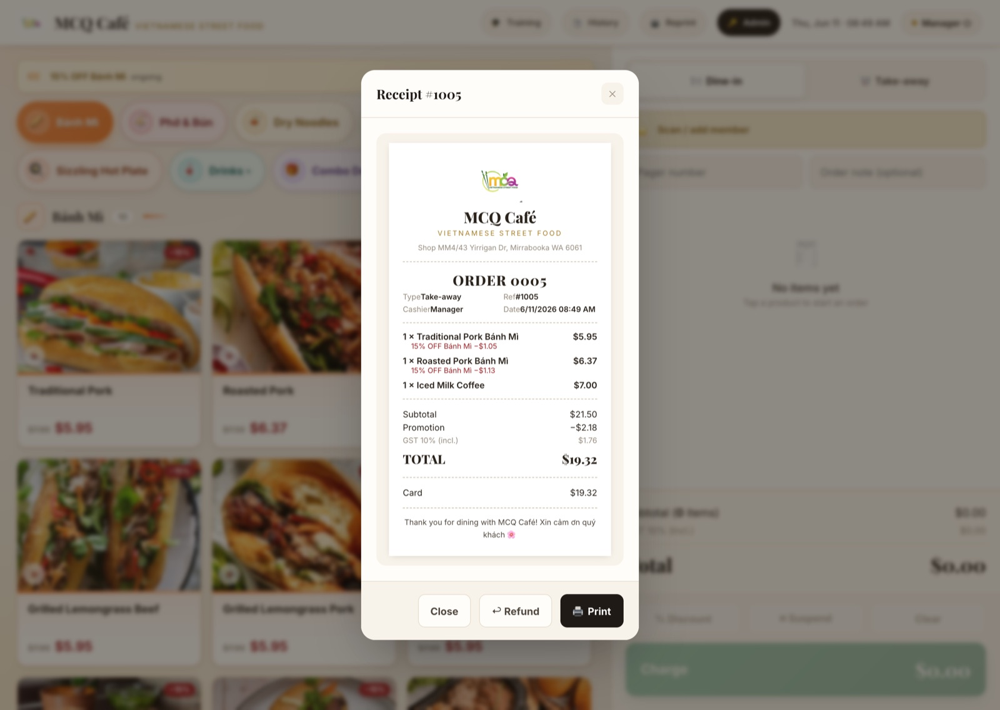
A branded receipt. Use Print to send it to a printer or save it as a PDF.
Printing & reprinting
When a sale completes, tap 🖨 Print on the confirmation to print the receipt. In the print dialog you can also choose "Save as PDF" to keep a digital copy.
Reprint last is always available in the top bar.
To reprint an older sale, find it in Transaction History (Chapter 10) and tap the printer icon.
Chapter 9
9 · Promotions
Promotions are rule-driven and date-aware: a campaign switches on and off automatically on its start / end dates, with no action from staff.
The default rule is 15% OFF Bánh Mì — applied to the base price only, excluding the MCQ Special Sizzling Beef and excluding combos.
Each promotion shows a status: Active · Scheduled · Expired · Disabled. Only Active rules discount a sale.
A cashier-facing promotions panel & banner shows what is currently running and until when, so you bill correctly alongside any marketing campaign.
Managers create and edit campaigns (with dates) in Menu Manager → Promotions (Chapter 12).
Chapter 10
10 · Transaction History, Refunds & Voids
Open Transaction History from the navigation rail to look up any sale across all days — including sales placed at the self-service kiosk.
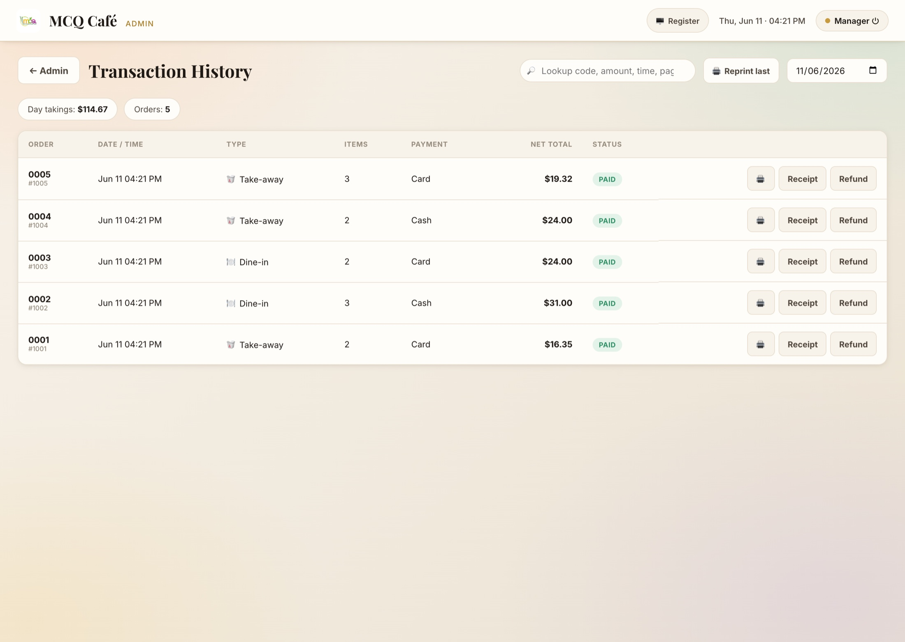
Transaction History — search, then reprint, refund or void a sale.
Looking up a sale
Search by order number, queue number, table, customer name, amount or time. This is how the counter finds a kiosk customer's receipt — ask for their queue number (e.g. 0006) and search it.
Refunds Manager
Full or partial (per-item) refunds with a required reason and a refund method. Partial refunds return the right share of any discount and tax.
A refund voucher is printed and the sale's status is updated to partial-refund or refunded.
Voids Manager
A Void cancels a sale made in error and removes it from all takings (use a refund, not a void, when money was genuinely returned). Every refund and void is written to the audit trail.
Chapter 11
11 · Dashboard & Reports Manager
The Dashboard turns your sales into figures you can act on.
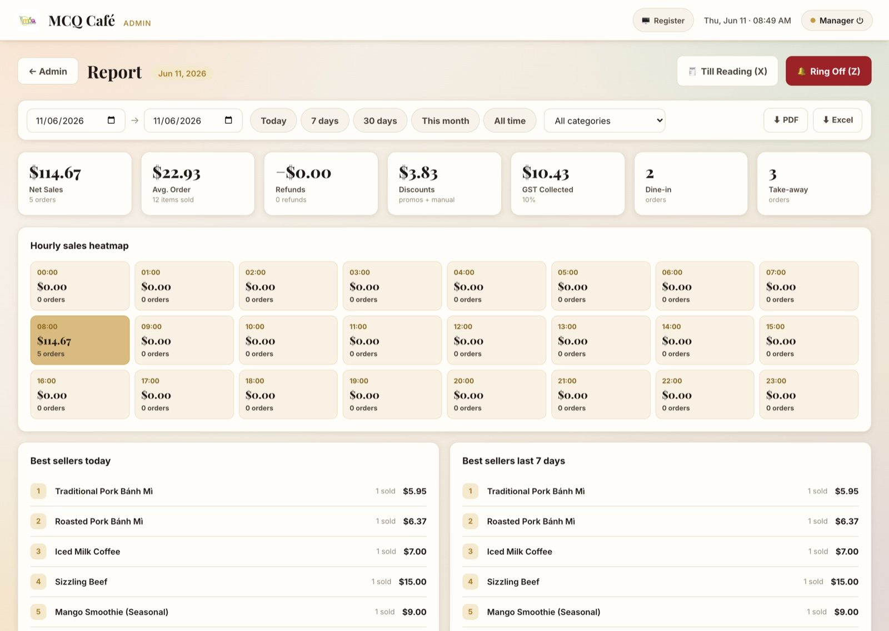
The Dashboard — KPIs across the top, an hourly heatmap, and top sellers.
What it shows
KPIs — net sales, average order, refunds, discounts, tax collected, and dine-in vs take-away counts.
Hourly sales heatmap, sales by category, payment mix and top sellers.
Any date range plus quick ranges (Today, 7 days, 30 days, This month, All time) and a category filter.
Exports & the till reading
Export the current report to PDF or Excel.
Till Reading gives an X reading (a peek during the shift) or a Z reading (ring off the day) — the Z reading requires a Manager PIN.
Chapter 12
12 · Menu Manager Manager
Menu Manager has three tabs for everything about your products and pricing.
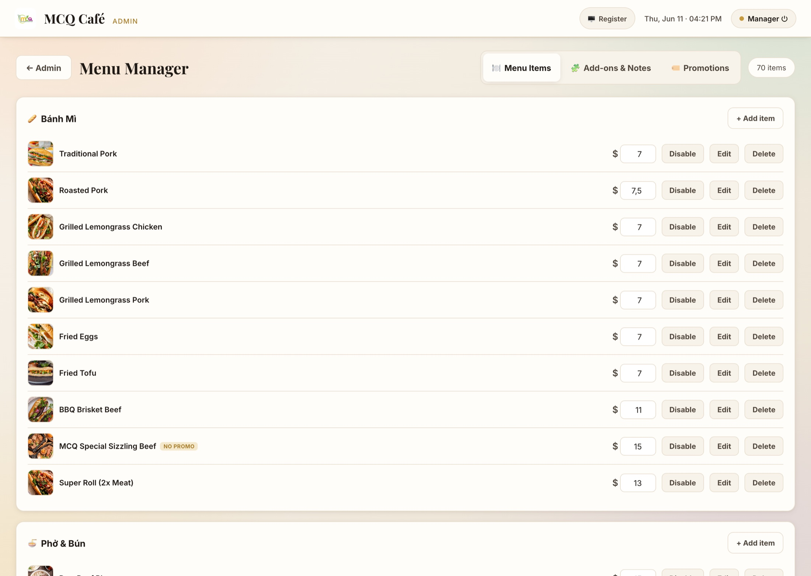
Menu Manager — edit prices inline, enable/disable items, and add or remove products.
The three tabs
Menu Items — change a price by typing the new number (it saves when you tap away), enable / disable an item (a disabled item greys out and can't be sold), and add, edit or delete products. Flags include no-discount and take-away only.
Add-ons & Notes — full control of the modifier groups and options that power the Customise sheet, including their prices.
Promotions — create and edit campaigns with start / end dates (Chapter 9).
Sold out?
Disable the item in Menu Items. It immediately greys out on the register and the kiosk and can't be added.
Chapter 13
13 · Settings Manager
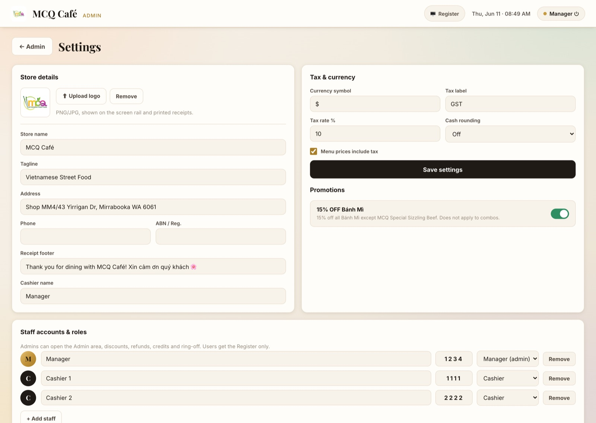
Settings — store details, tax, staff accounts and data backup all live here.
What you can set
Store details — name, tagline, address, phone, ABN, and a logo upload (shown on screen and on printed receipts).
Money — currency symbol, tax rate & label (default GST 10%), a tax-inclusive toggle, and optional cash rounding.
Receipt footer — your thank-you message.
Staff accounts — add or remove staff, set each PIN and role (Manager or Cashier). This is where you change the default PINs.
Data — Export a backup file, Import it on another device, or Reset to the default menu.
Reset wipes everything
Settings → Reset erases all orders, settings and menu edits and restores the default menu. It cannot be undone — export a backup first.
Chapter 14
14 · The Admin Hub Manager
The Admin hub is the manager's launch pad. From here you reach the back-office tools and open the guest-facing screens.
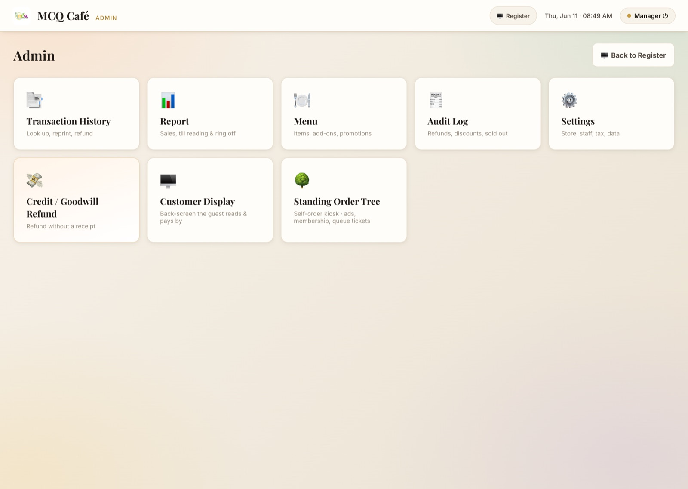
The Admin hub — tiles for reports, history, menu, settings, the audit log, the Customer Display and the Standing Order Tree.
Back-office tiles — Dashboard, Transaction History, Menu Manager, Settings and the Audit log.
Customer Display — opens the second guest-facing screen (Chapter 15).
Standing Order Tree — opens the self-service kiosk (Chapter 16).
Audit log
The audit log records sensitive events — sales, refunds, voids, discounts, kiosk orders and settings changes — with who and when, and can be exported.
Chapter 15
15 · Customer Display (Second Screen)
The Customer Display is a guest-facing screen for the counter — point a second monitor or tablet at the customer and it mirrors their order live as you ring it up.
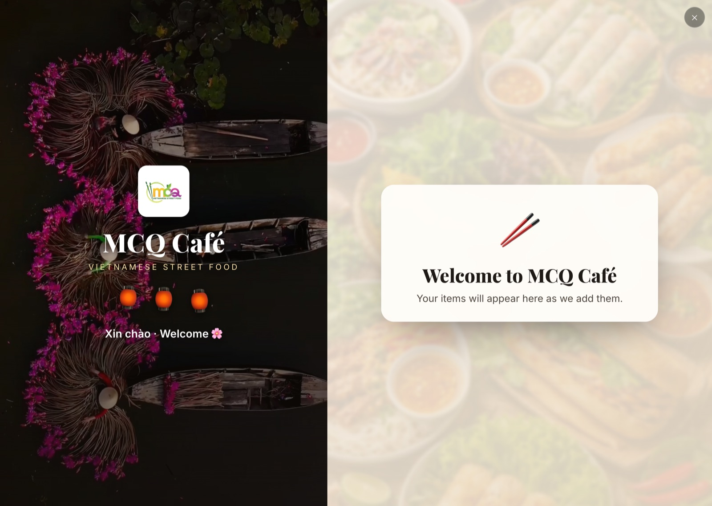
The Customer Display shows the live order, the total, and rotating food videos; a thank-you appears when the sale completes.
It updates in real time as items are added at the till (on the same device / browser).
Between orders it plays appetising food videos and shows your branding.
Open it from the Admin hub; close it with the ✕ in the corner.
Chapter 16
16 · Standing Order Tree — Self-Service Kiosk
The Standing Order Tree lets customers order by themselves on a standing touchscreen. It is opened by a manager from the Admin hub and runs full-screen.
16.1 · Attract screen
When idle, the kiosk plays a full-screen food video with a bold, colour-cycling "Tap anywhere to start your order" prompt. Tapping anywhere begins an order.
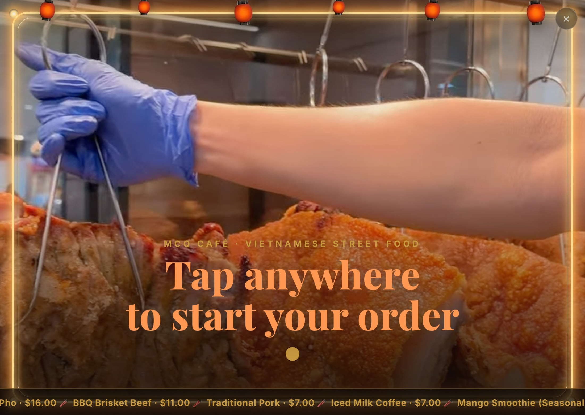
The attract loop — a prominent video invites the customer to tap and start.
16.2 · Home & language
The home screen greets the customer, shows what's popular, and offers a clear EN / VI language switch in the top bar (the whole kiosk interface translates). Customers can also scan their membership here to earn points.
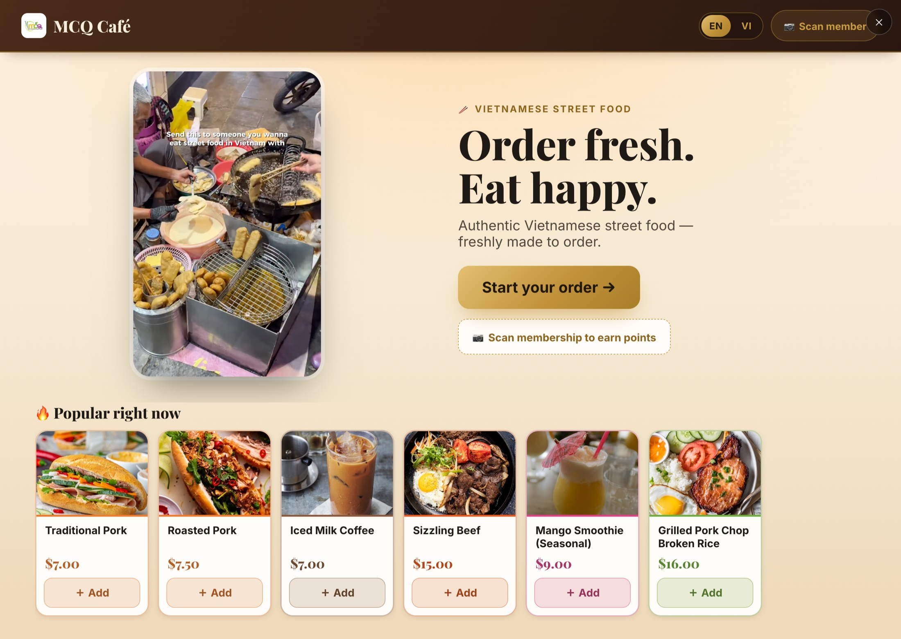
Home — "Start your order", a popular row, and the EN/VI language toggle (top right).
Tapping VI instantly translates the whole kiosk interface to Vietnamese (the menu chrome, buttons, filters and checkout); dish names stay as entered. Tap EN to switch back.
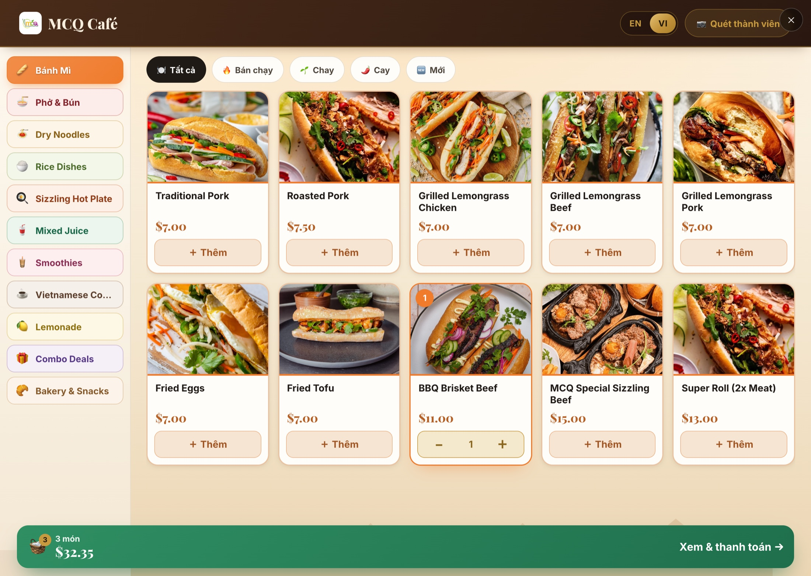
The same menu with Vietnamese selected — filters (Tất cả · Bán chạy · Chay · Cay · Mới) and the checkout bar are translated.
16.3 · The menu
A category rail (on the left in landscape, a strip on top in portrait), quick filter chips (Popular · Veg · Spicy · New), and a grid of dishes. Key touches that reduce tapping for a standing customer:
Add right on the card — once a dish is added, the card itself becomes a − / + stepper with a quantity badge, so quantity is adjusted in place.
Tap a card to open the full item sheet (photo, options, note).
A bottom bar is always visible showing the basket and total — one tap goes to checkout.
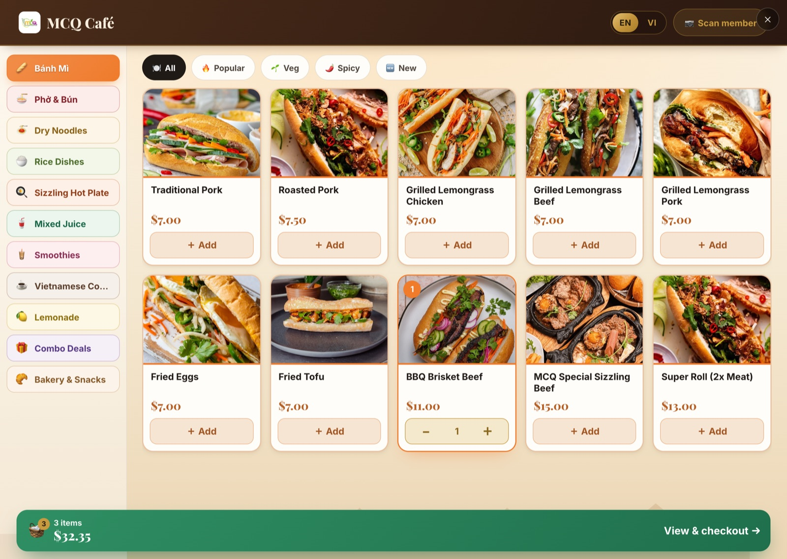
The kiosk menu — category rail, filter chips, dish cards with "+ Add", and the persistent checkout bar at the bottom.
16.4 · The item sheet
Tapping a dish opens a bottom-sheet with a large photo, paid add-ons, free preferences, a kitchen note and a quantity selector — the same choices a cashier has. Combos let the customer pick their own fillings here, rather than "at the counter".
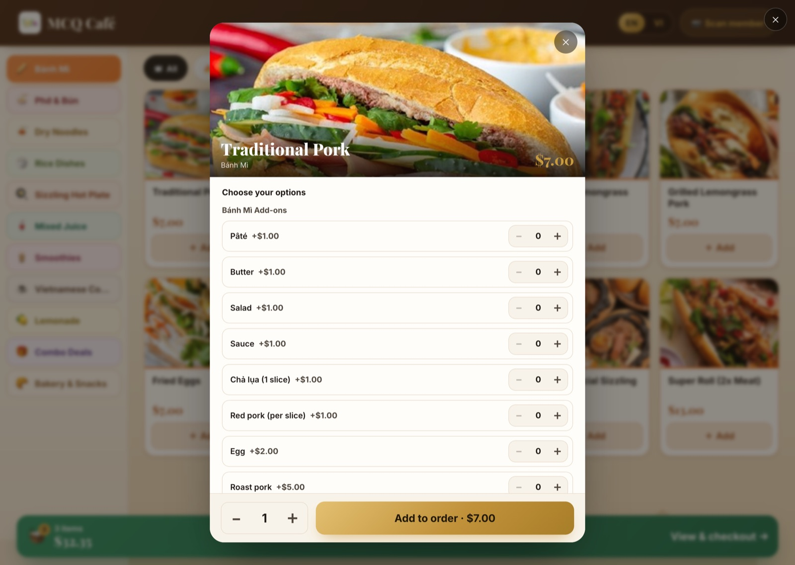
The item detail / customise sheet — add-ons, preferences, a note and quantity.
16.5 · Checkout
The checkout uses two columns: the editable order on the left (adjust quantity or remove), and a sticky summary on the right. It also shows a progress bar (Choose → Review → Pay → Queue), a Dine-in / Take-away choice, a full money breakdown (subtotal · promo · tax · total), an inline membership box, and an "Add a drink or dessert?" upsell.
The kiosk takes card payment only (cash customers are asked to order at the counter). After paying, the customer sees a big queue number with two buttons — 🖨 Print receipt and ⬇ Save PDF — and any loyalty points earned.
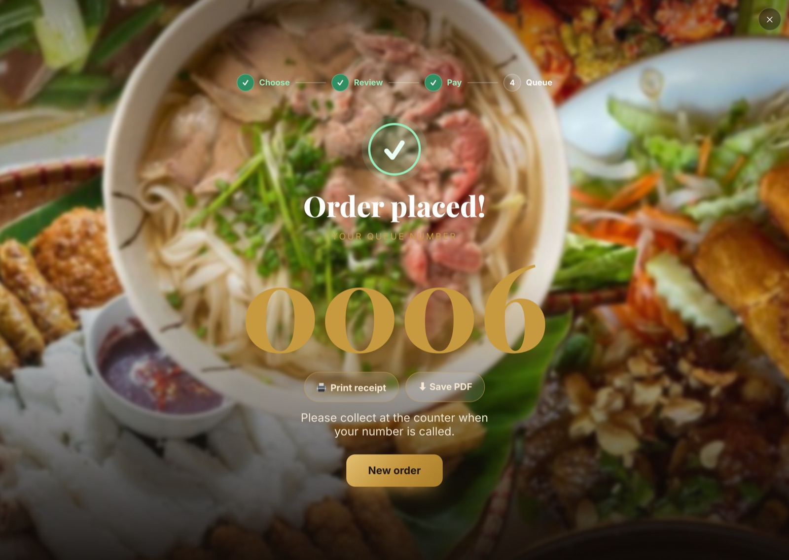
Order placed — the queue number, plus Print / Save-PDF receipt buttons.
16.7 · Kiosk orders join the cashier's history
Important
Every kiosk sale is recorded in the same Transaction History the cashier uses (listed with cashier "Order Kiosk"). The counter can look it up by the customer's queue number, order id, amount or — if a member ordered — their name, then reprint or refund it like any other sale.
16.8 · Idle reset & exiting
If a customer walks away mid-order, the kiosk automatically returns to the attract screen so no abandoned order lingers.
A manager exits the kiosk with the small ✕ in the corner.
Chapter 17
17 · Loyalty & Membership
Customers can earn points on every order — at the counter or the kiosk.
Attach a member by scanning / entering their card code or phone number.
Points are earned at 1 point per $1 spent (configurable).
Demo membership cards are provided for testing:
Card code
Name
Points
MCQ1001
Linh Nguyen
240
MCQ1002
Anh Tran
80
MCQ1003
Minh Le
515
One device at a time
Because data is stored on each device (Chapter 18), points earned on one tablet are not shared with another tablet unless they are the same browser. A shared, multi-device loyalty programme needs a back-end.
Chapter 18
18 · Data, Storage & Backup
All data — your menu, prices, orders, members and settings — is stored by the browser on the device itself (in "local storage"). It survives refreshes and restarts.
What this means in practice
Per device. Each tablet / browser keeps its own copy. A register on one tablet and a kiosk on another do not automatically share data unless they are the same browser on the same device.
Back up regularly. Use Settings → Export to save a backup file; Import restores it (also handy to copy your setup to another device).
Clearing the browser cache erases the data. Keep a recent export.
Want one shared database across devices?
Live sharing between a kiosk and several tills (one order list, one queue number, one loyalty balance) requires a real back-end (a server and database). That is a larger project — speak to your developer if you need it.
Chapter 19
19 · Keyboard, Touch & Tips
Built for touch — big buttons throughout; an on-screen keyboard appears for text fields on touch devices.
Esc closes any open dialog.
Fully responsive — the layout adapts to portrait (standing kiosk) and landscape (counter) screens.
Full-screen — run the browser full-screen on tablets for a clean, kiosk-like look.
Reprint last in the top bar is the fastest way to re-issue the most recent receipt.
Chapter 20
20 · Troubleshooting & FAQ
Videos or images load slowly / stutter
This is usually the hosting, not the app. If you host on a basic plan, make sure the images and videos are served directly by the web server (a "static files" mapping) rather than through application code. For the smoothest media, host the site on a CDN-backed static host (e.g. GitHub Pages or Cloudflare Pages).
I forgot a PIN / locked myself out
Another Manager can reset PINs in Settings → Staff. If no Manager can log in, a full Reset restores the defaults (Manager 1234) but erases all data — so keep a backup export.
A kiosk customer needs their receipt
Ask for their queue number and search it in Transaction History, then reprint.
An item shouldn't be on sale
Disable it in Menu Manager → Menu Items; it greys out everywhere instantly.
The card payment didn't charge the customer's card
Correct — the card flow is a simulation. Real card processing needs a payment terminal or online provider (and a back-end).
My changes to the code aren't showing online
After updating the hosted files, reload the web app on the host and refresh the browser. A hard refresh (clearing cache) ensures the newest version loads.
Appendix
A · Quick Reference
Default logins
Account
PIN
Role
Manager
1234
Admin — full access
Cashier 1
1111
Cashier — register
Cashier 2
2222
Cashier — register
Change these in Settings → Staff before going live.
How the total is built
Unit price = base item price + paid add-ons.
Subtotal = unit price × quantity, at full price.
Promotion = % off each eligible line (base price only; never on paid add-ons; only Active promos apply).
Discount = optional manual discount, applied after the promotion.
Tax (GST) = inclusive (already in the price) or exclusive (added on top), per Settings.
Cash rounding = optional, only when the whole sale is paid in cash.
Default tax & currency
Currency $ · GST 10%, tax-inclusive · loyalty 1 point / $1. All editable in Settings.
End of guide
MCQ Café — Point of Sale System · Xin cảm ơn quý khách 🌸